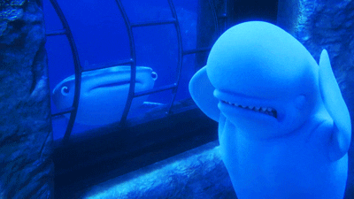
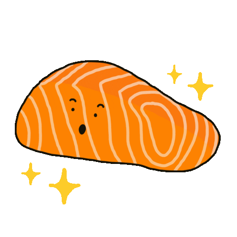

So this is my cousin Bobby the Beluga whale! We have many similar interests like swimming in the Arctic and spending time with friends and family. But I'll let Bobby tell you more about himself.
Heyo, I'm Bobby! So Nate already introduced me, but here are a couple more facts about me:

1. I'm also part of the whale family, but I have a larger head that helps me look and identify things through sound waves. (it's a pretty cool superpower)

2. I don't really have a favorite snack but I do enjoy many types of fish and invertebrates such as pacific salmon and crabs
3. My family and I travel pretty often throughout the year depending on the seasons (the dream lifestyle for travel bloggers)